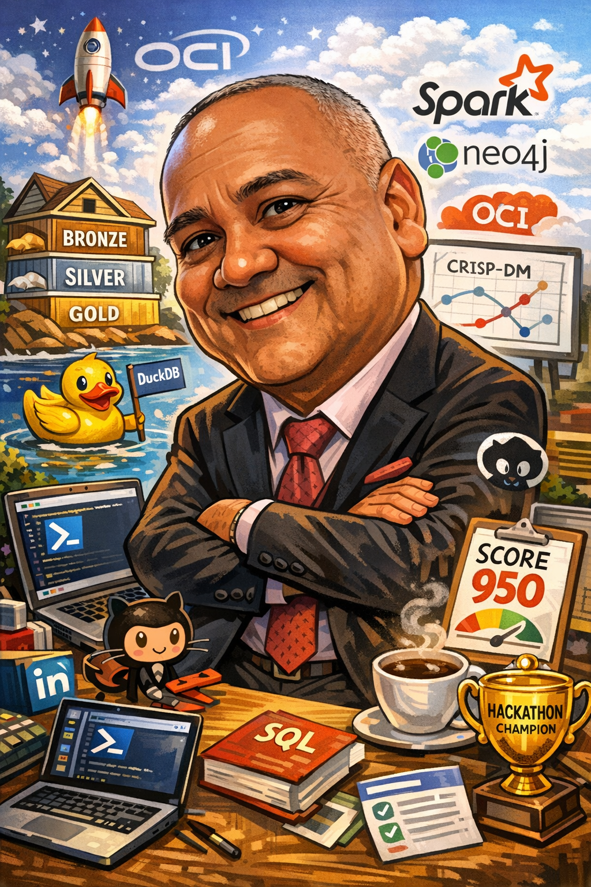

Profissional com longa trajetória na área de dados, em processo de consolidação estratégica em Ciência de Dados, Engenharia de Dados e Analytics aplicado, com foco em projetos bem documentados, construção de portfólio e conexão entre técnica e negócio.

Sou Roberto Soares, profissional da área de dados com uma trajetória construída ao longo de muitos anos em contextos analíticos, de negócio e de apoio à tomada de decisão. Ao longo do tempo, desenvolvi uma base sólida em análise, interpretação de informações e visão orientada a valor.
Nos últimos anos, tenho direcionado meus esforços para consolidar uma transição estratégica em direção a Ciência de Dados, Engenharia de Dados e soluções analíticas mais modernas, aprofundando conhecimentos em Python, SQL, Machine Learning, organização de pipelines, documentação técnica e construção de projetos aplicados.
Este portfólio representa essa evolução: uma vitrine de estudos, projetos e experimentos organizados para demonstrar capacidade técnica, clareza de raciocínio, disciplina de aprendizado e compromisso com entrega profissional.
Busco construir uma presença profissional que una repertório analítico, maturidade de negócio e evolução técnica. Meu foco está em projetos que demonstrem aplicação prática, boa comunicação, estruturação clara e alinhamento com demandas reais do mercado de dados.
Quero mostrar não apenas conhecimento de ferramentas, mas também capacidade de formular problemas, organizar soluções, documentar raciocínios, interpretar resultados e transformar estudos em ativos profissionais relevantes para recrutadores, lideranças e times de dados.
Anos de experiência profissional com forte base em contexto analítico e de negócio.
Foco atual em Analytics, Ciência de Dados, Engenharia de Dados e portfólio técnico.
Construção contínua de cases, estudos aplicados e documentação orientada ao mercado.
Valorizo projetos que tenham começo, meio e fim: contexto, problema, abordagem, execução, documentação e leitura de resultados. Acredito que um bom projeto técnico precisa ser compreensível, reproduzível e comunicável.
Por isso, procuro estruturar meus trabalhos com clareza visual, boa narrativa, padronização, rastreabilidade das decisões e foco em demonstrar valor além do código.
Vejo dados como ponte entre contexto, decisão e transformação. Mais do que ferramentas, o que me interessa é a capacidade de gerar entendimento, reduzir incerteza e apoiar escolhas com base analítica consistente.
É essa visão que busco traduzir neste portfólio: projetos que dialoguem com mercado, demonstrem evolução e deixem claro meu compromisso com aprendizado contínuo e aplicação prática.
Este portfólio foi construído como uma vitrine técnica e estratégica da minha evolução em dados. Fico aberto a conexões, oportunidades, networking e conversas profissionais.